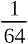
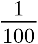

Graphics Interchange Format Version 89a
© 1987, 1988, 1989, 1990
Copyright
CompuServe Incorporated
Columbus, Ohio
Graphics Interchange Format Programming Reference
CompuServe Incorporated
Document Date: 31 July 1990
hide all chapters |
show all chapters
Table of Contents (hide/show)
1. Disclaimer (hide/show)
The information provided herein is subject to change without notice. In no
event will CompuServe Incorporated be liable for damages, including any loss of
revenue, loss of profits or other incidental or consequential damages arising
out of the use or inability to use the information; CompuServe Incorporated
makes no claim as to the suitability of the information.
2. Foreword (hide/show)
This document defines the Graphics Interchange Format℠. The
specification given here defines version 89a, which is an extension of version
87a.
The Graphics Interchange Format℠ as specified here should be
considered complete; any deviation from it should be considered invalid,
including but not limited to, the use of reserved or undefined fields within
control or data blocks, the inclusion of extraneous data within or between
blocks, the use of methods or algorithms not specifically listed as part of the
format, etc. In general, any and all deviations, extensions or modifications
not specified in this document should be considered to be in violation of the
format and should be avoided.
3. Licensing (hide/show)
The Graphics Interchange Format© is the copyright property of
CompuServe Incorporated. Only CompuServe Incorporated is authorized to define,
redefine, enhance, alter, modify or change in any way the definition of the
format.
CompuServe Incorporated hereby grants a limited, non-exclusive, royalty-free
license for the use of the Graphics Interchange Format℠ in computer
software; computer software utilizing GIF℠ must acknowledge ownership of
the Graphics Interchange Format and its Service Mark by CompuServe
Incorporated, in User and Technical Documentation. Computer software utilizing
GIF, which is distributed or may be distributed without User or Technical
Documentation must display to the screen or printer a message acknowledging
ownership of the Graphics Interchange Format and the Service Mark by CompuServe
Incorporated; in this case, the acknowledgement may be displayed in an opening
screen or leading banner, or a closing screen or trailing banner. A message
such as the following may be used:
The Graphics Interchange Format© is the Copyright property of
CompuServe Incorporated. GIF℠ is a Service Mark property of
CompuServe Incorporated.
For further information, please contact:
CompuServe Incorporated
Graphics Technology Department
5000 Arlington Center Boulevard
Columbus, Ohio 43220
U. S. A.
CompuServe Incorporated maintains a mailing list with all those individuals
and organizations who wish to receive copies of this document when it is
corrected or revised. This service is offered free of charge; please provide us
with your mailing address.
4. About the Document (hide/show)
This document describes in detail the definition of the Graphics Interchange
Format. This document is intended as a programming reference; it is recommended
that the entire document be read carefully before programming, because of the
interdependence of the various parts. There is an individual section for each
of the Format blocks. Within each section, the sub-section labeled Required
Version refers to the version number that an encoder will have to use if the
corresponding block is used in the Data Stream. Within each section, a diagram
describes the individual fields in the block; the diagrams are drawn
vertically; top bytes in the diagram appear first in the Data Stream. Bits
within a byte are drawn most significant on the left end. Multi-byte numeric
fields are ordered Least Significant Byte first. Numeric constants are
represented as Hexadecimal numbers, preceded by "0x". Bit fields
within a byte are described in order from most significant bits to least
significant bits.
5. General Description (hide/show)
The Graphics Interchange Format℠ defines a protocol intended for the
on-line transmission and interchange of raster graphic data in a way that is
independent of the hardware used in their creation or display.
The Graphics Interchange Format is defined in terms of blocks and
sub-blocks which contain relevant parameters and data
used in the reproduction of a graphic. A GIF Data Stream is a sequence of
protocol blocks and sub-blocks representing a collection of graphics. In
general, the graphics in a Data Stream are assumed to be related to some
degree, and to share some control information; it is recommended that encoders
attempt to group together related graphics in order to minimize hardware
changes during processing and to minimize control information overhead. For the
same reason, unrelated graphics or graphics which require resetting hardware
parameters should be encoded separately to the extent possible.
A Data Stream may originate locally, as when read from a file, or it may
originate remotely, as when transmitted over a data communications line. The
Format is defined with the assumption that an error-free Transport Level
Protocol is used for communications; the Format makes no provisions for
error-detection and error-correction.
The GIF Data Stream must be interpreted in context, that is, the application
program must rely on information external to the Data Stream to invoke the
decoder process.
6. Version Numbers (hide/show)
The version number in the Header of a Data Stream is
intended to identify the minimum set of capabilities required of a decoder in
order to fully process the Data Stream. An encoder should use the earliest
possible version number that includes all the blocks used in the Data Stream.
Within each block section in this document, there is an entry labeled Required
Version which specifies the earliest version number that includes the
corresponding block. The encoder should make every attempt to use the earliest
version number covering all the blocks in the Data Stream; the unnecessary use
of later version numbers will hinder processing by some decoders.
7. The Encoder (hide/show)
The Encoder is the program used to create a GIF Data Stream. From raster
data and other information, the encoder produces the necessary control and data
blocks needed for reproducing the original graphics.
The encoder has the following primary responsibilities.
- Include in the Data Stream all the necessary information to reproduce
the graphics.
- Insure that a Data Stream is labeled with the earliest possible Version
Number that will cover the definition of all the blocks in it; this is to
ensure that the largest number of decoders can process the Data Stream.
- Ensure encoding of the graphics in such a way that the decoding process
is optimized. Avoid redundant information as much as possible.
- To the extent possible, avoid grouping graphics which might require
resetting hardware parameters during the decoding process.
- Set to zero (off) each of the bits of each and every field designated
as reserved. Note that some fields in the Logical Screen Descriptor and the
Image Descriptor were reserved under Version
87a, but are used under version 89a.
8. The Decoder (hide/show)
The Decoder is the program used to process a GIF Data Stream. It processes
the Data Stream sequentially, parsing the various blocks and
sub-blocks, using the control information to set
hardware and process parameters and interpreting the data to render the
graphics.
The decoder has the following primary responsibilities.
- Process each graphic in the Data Stream in sequence, without delays
other than those specified in the control information.
- Set its hardware parameters to fit, as closely as possible, the control
information contained in the Data Stream.
9. Compliance (hide/show)
An encoder or a decoder is said to comply with a given version of the
Graphics Interchange Format if and only if it fully conforms with and correctly
implements the definition of the standard associated with that version. An
encoder or a decoder may be compliant with a given version number and not
compliant with some subsequent version.
10. About Recommendations (hide/show)
Each block section in this document contains an entry labeled
Recommendation; this section lists a set of recommendations intended to guide
and organize the use of the particular blocks. Such recommendations are geared
towards making the functions of encoders and decoders more efficient, as well
as making optimal use of the communications bandwidth. It is advised that these
recommendations be followed.
11. About Color Tables (hide/show)
The GIF format utilizes color tables to render raster-based graphics. A
color table can have one of two different scopes: global or local.
A Global Color Table is used by all those
graphics in the Data Stream which do not have a
Local Color Table associated with them. The
scope of the Global Color Table is the entire Data Stream.
A Local Color Table is always associated with the graphic that immediately
follows it; the scope of a Local Color Table is limited to that single graphic.
A Local Color Table supersedes a Global Color Table, that is, if a Data Stream
contains a Global Color Table, and an image has a Local Color Table associated
with it, the decoder must save the Global Color Table, use the Local Color
Table to render the image, and then restore the Global Color Table.
Both types of color tables are optional, making it possible for a Data
Stream to contain numerous graphics without a color table at all. For this
reason, it is recommended that the decoder save the last Global Color Table
used until another Global Color Table is encountered. In this way, a Data
Stream which does not contain either a Global Color Table or a Local Color
Table may be processed using the last Global Color Table saved. If a Global
Color Table from a previous Stream is used, that table becomes the Global Color
Table of the present Stream. This is intended to reduce the overhead incurred
by color tables. In particular, it is recommended that an encoder use only one
Global Color Table if all the images in related Data Streams can be rendered
with the same table. If no color table is available at all, the decoder is free
to use a system color table or a table of its own. In that case, the decoder
may use a color table with as many colors as its hardware is able to support;
it is recommended that such a table have black and white as its first two
entries, so that monochrome images can be rendered adequately.
The Definition of the GIF Format allows for a Data Stream to contain only
the Header, the
Logical Screen Descriptor, a Global
Color Table and the GIF Trailer. Such a Data Stream
would be used to load a decoder with a Global Color Table, in preparation for
subsequent Data Streams without a color table at all.
12. Blocks, Extensions and Scope (hide/show)
Blocks can be classified into three groups: Control, Graphic-Rendering and
Special Purpose.
Control blocks, such as the Header, the Logical Screen
Descriptor, the Graphic Control
Extension and the Trailer, contain information used
to control the process of the Data Stream or information used in setting
hardware parameters.
Graphic-Rendering blocks such as the Image
Descriptor and the Plain Text Extension
contain information and data used to render a graphic on the display
device.
Special Purpose blocks such as the Comment
Extension and the Application Extension
are neither used to control the process of the Data Stream nor do they contain
information or data used to render a graphic on the display device.
With the exception of the Logical Screen
Descriptor and the Global Color Table,
whose scope is the entire Data Stream, all other Control blocks have a limited
scope, restricted to the Graphic-Rendering block that follows them. Special
Purpose blocks do not delimit the scope of any Control blocks; Special Purpose
blocks are transparent to the decoding process. Graphic-Rendering blocks and
extensions are used as scope delimiters for Control blocks and extensions.
The labels used to identify labeled blocks fall into three ranges:
- 0x00–0x7F (0–127) are the Graphic
Rendering blocks, excluding the Trailer
(0x3B, 59)
- 0x80–0xF9 (128–249) are the Control
blocks
- 0xFA–0xFF (250–255) are the Special
Purpose blocks
These ranges are defined so that decoders can handle block scope by
appropriately identifying block labels, even when the block itself cannot be
processed.
13. Block Sizes (hide/show)
The Block Size field in a block, counts the number of bytes remaining in the
block, not counting the Block Size field itself, and not counting the
Block Terminator, if one is to follow. Blocks
other than Data Blocks are intended to be of fixed length; the Block Size field
is provided in order to facilitate skipping them, not to allow their size to
change in the future. Data blocks and sub-blocks are
of variable length to accommodate the amount of data.
14. Using GIF as an embedded protocol (hide/show)
As an embedded protocol, GIF may be part of larger application protocols,
within which GIF is used to render graphics. In such a case, the application
protocol could define a block within which the GIF Data Stream would be
contained. The application program would then invoke a GIF decoder upon
encountering a block of type GIF. This approach is recommended in favor of
using Application Extensions, which become
overhead for all other applications that do not process them. Because a GIF
Data Stream must be processed in context, the application must rely on some
means of identifying the GIF Data Stream outside of the Stream itself.
15. Data Sub-blocks (hide/show)
a. Description
Data Sub-blocks are units containing data. They do not have a label, these
blocks are processed in the context of control blocks, wherever data blocks are
specified in the format. The first byte of the Data sub-block indicates the
number of data bytes to follow. A data sub-block may contain from 0 to 255 data
bytes. The size of the block does not account for the size byte itself,
therefore, the empty sub-block is one whose size field contains 0x00
(0).
b. Required Version
87a.
c. Syntax
| Byte #
| Field Name
| Type
|
| 0
| Block Size
| Byte
|
| 1
| Data Values
| Byte
|
| 2
|
| 3
|
| ⋮
|
| up to 255
|
- Block Size:
- Number of bytes in the Data Sub-block; the size must be within 0
and 255 bytes, inclusive.
- Data Values:
- Any 8-bit value. There must be exactly as many Data Values as
specified by the Block Size field.
d. Extensions and Scope
This type of block always occurs as part of a larger unit. It does not have
a scope of itself.
e. Recommendation
None.
16. Block Terminator (hide/show)
a. Description
This zero-length Data Sub-block is used to
terminate a sequence of Data Sub-blocks. It contains a single byte in the
position of the Block Size field and does not contain data.
b. Required Version
87a.
c. Syntax
| Byte #
| Field Name
| Type
|
| 0
| Block Size
| Byte
|
- Block Size:
- Number of bytes in the Data Sub-block; this field contains the
fixed value 0x00 (0).
- Data Values:
- This block does not contain any data.
d. Extensions and Scope
This block terminates the immediately preceding sequence of Data Sub-blocks.
This block cannot be modified by any extension.
e. Recommendation
None.
a. Description
The Header identifies the GIF Data Stream in context. The Signature field
marks the beginning of the Data Stream, and the Version field identifies the
set of capabilities required of a decoder to fully process the Data Stream.
This block is required; exactly one Header must be present per Data
Stream.
b. Required Version
Not applicable. This block is not subject to a version number. This block
must appear at the beginning of every Data Stream.
c. Syntax
| Byte #
| Field Name
| Type
|
| 0
| Signature
| 3 Bytes
|
| 1
|
| 2
|
| 3
| Version
| 3 Bytes
|
| 4
|
| 5
|
- Signature:
- Identifies the GIF Data Stream. This field contains the fixed value
'GIF' (0x47 0x49 0x46).
- Version:
- Version number used to format the data stream. Identifies the
minimum set of capabilities necessary to a decoder to fully process the
contents of the Data Stream.
- Version Numbers as of 10 July 1990:
- "87a" (0x38 0x37 0x61) – May 1987
- "89a" (0x38 0x39 0x61) – July 1989
- Version numbers are ordered numerically increasing on the first two
digits starting with 87 (87, 88, …, 99, 00, …, 85, 86)
and alphabetically increasing on the third character (a, …, z).
- Extensions and Scope:
- The scope of this block is the entire Data Stream. This block
cannot be modified by any extension.
d. Recommendations
- Signature:
- This field identifies the beginning of the GIF Data Stream; it is
not intended to provide a unique signature for the identification of
the data. It is recommended that the GIF Data Stream be identified
externally by the application. (Refer to Appendix
G for on-line identification of the GIF Data Stream.)
- Version:
- Encoder: An encoder should use the earliest possible version number
that defines all the blocks used in the Data Stream. When two or more
Data Streams are combined, the latest of the individual version numbers
should be used for the resulting Data Stream.
- Decoder: A decoder should attempt to process the data stream to the
best of its ability; if it encounters a version number which it is not
capable of processing fully, it should nevertheless, attempt to process
the data stream to the best of its ability, perhaps after warning the
user that the data may be incomplete.
18. Logical Screen Descriptor (hide/show)
a. Description
The Logical Screen Descriptor contains the parameters necessary to define
the area of the display device within which the images will be rendered. The
coordinates in this block are given with respect to the top-left corner of the
virtual screen; they do not necessarily refer to absolute coordinates on the
display device. This implies that they could refer to window coordinates in a
window-based environment or printer coordinates when a printer is used.
This block is required; exactly one Logical Screen Descriptor must be
present per Data Stream.
b. Required Version
Not applicable. This block is not subject to a version number. This block
must appear immediately after the Header.
c. Syntax
| Byte #
| Bits
| Field Name
| Type
|
| 7
| 6
| 5
| 4
| 3
| 2
| 1
| 0
|
| 0
|
| Logical Screen Width
| Unsigned
|
| 1
|
| 2
|
| Logical Screen Height
| Unsigned
|
| 3
|
| 4
|
|
|
|
| <Packed Fields>
| See below
|
| 5
|
| Background Color Index
| Byte
|
| 6
|
| Pixel Aspect Ratio
| Byte
|
<Packed Fields> =
| Global Color Table Flag
| 1 Bit
|
| Color Resolution
| 3 Bits
|
| Sort Flag
| 1 Bit
|
| Size of Global Color Table
| 3 Bits
|
- Logical Screen Width:
- Width, in pixels, of the Logical Screen where the images will be
rendered in the displaying device.
- Logical Screen Height:
- Height, in pixels, of the Logical Screen where the images will be
rendered in the displaying device.
- Global Color Table Flag:
- Flag indicating the presence of a Global Color Table; if the flag
is set, the Global Color Table will immediately follow the Logical
Screen Descriptor. This flag also selects the interpretation of the
Background Color Index; if the flag is set, the value of the Background
Color Index field should be used as the table index of the background
color. (This field is the most significant bit of the byte.)
- Values:
- 0: No Global Color Table follows, the Background Color Index
field is meaningless.
- 1: A Global Color Table will immediately follow, the Background
Color Index field is meaningful.
- Color Resolution:
- Number of bits per primary color available to the original image,
minus 1. This value represents the size of the entire palette from
which the colors in the graphic were selected, not the number of colors
actually used in the graphic. For example, if the value in this field
is 3, then the palette of the original image had 4 bits per primary
color available to create the image. This value should be set to
indicate the richness of the original palette, even if not every color
from the whole palette is available on the source machine.
- Sort Flag:
- Indicates whether the Global Color Table is sorted. If the flag is
set, the Global Color Table is sorted, in order of decreasing
importance. Typically, the order would be decreasing frequency, with
most frequent color first. This assists a decoder, with fewer available
colors, in choosing the best subset of colors; the decoder may use an
initial segment of the table to render the graphic.
- Values:
- 0: Not ordered.
- 1: Ordered by decreasing importance, most important color
first.
- Size of Global Color Table:
- If the Global Color Table Flag is set to 1, the value in this field
is used to calculate the number of bytes contained in the Global Color
Table. To determine that actual size of the color table, raise 2 to
[the value of the field + 1]. Even if there is no Global Color Table
specified, set this field according to the above formula so that
decoders can choose the best graphics mode to display the stream in.
(This field is made up of the 3 least significant bits of the byte.)
- Background Color Index:
- Index into the Global Color Table for the Background Color. The
Background Color is the color used for those pixels on the screen that
are not covered by an image. If the Global Color Table Flag is set to
(zero), this field should be zero and should be ignored.
- Pixel Aspect Ratio:
- Factor used to compute an approximation of the aspect ratio of the
pixel in the original image. If the value of the field is not 0, this
approximation of the aspect ratio is computed based on the formula:

- The Pixel Aspect Ratio is defined to be the quotient of the pixel's
width over its height. The value range in this field allows
specification of the widest pixel of 4:1 to the tallest pixel of 1:4 in
increments of .
- Values:
- 0: No aspect ratio information is given.
- 1…255: Value used in the computation.
d. Extensions and Scope
The scope of this block is the entire Data Stream. This block cannot be
modified by any extension.
e. Recommendations
None.
19. Global Color Table (hide/show)
a. Description
This block contains a color table, which is a sequence of bytes representing
red-green-blue color triplets. The Global Color Table is used by
images without a Local Color Table and by Plain Text Extensions. Its presence is marked by
the Global Color Table Flag being set to 1 in the Logical Screen Descriptor; if present, it
immediately follows the Logical Screen Descriptor and contains a number of
bytes equal to:
3 × 2Size of Global Color Table + 1
This block is optional; at most one Global Color Table may be present
per Data Stream.
b. Required Version
87a.
c. Syntax
| Byte #
| Field Name
| Type
|
| 0
| Red 0
| Byte
|
| 1
| Green 0
| Byte
|
| 2
| Blue 0
| Byte
|
| 3
| Red 1
| Byte
|
| 4
| Green 1
| Byte
|
| ⋮
| ⋮
| ⋮
|
| 766
| Green 255
| Byte
|
| up to 767
| Blue 255
| Byte
|
d. Extensions and Scope
The scope of this block is the entire Data Stream. This block cannot be
modified by any extension.
e. Recommendation
None.
20. Image Descriptor (hide/show)
a. Description
Each image in the Data Stream is composed of an Image Descriptor, an
optional Local Color Table, and the image data. Each image must fit within the
boundaries of the Logical Screen, as defined in the Logical Screen Descriptor.
The Image Descriptor contains the parameters necessary to process a table
based image. The coordinates given in this block refer to coordinates within
the Logical Screen, and are given in pixels. This block is a Graphic-Rendering
Block, optionally preceded by one or more Control blocks such as the Graphic Control Extension, and may be
optionally followed by a Local Color Table; the Image Descriptor is always
followed by the image data.
This block is required for an image. Exactly one Image Descriptor
must be present per image in the Data Stream. An unlimited number of images may
be present per Data Stream.
b. Required Version
87a.
c. Syntax
| Byte #
| Bits
| Field Name
| Type
|
| 7
| 6
| 5
| 4
| 3
| 2
| 1
| 0
|
| 0
|
| Image Separator
| Byte
|
| 1
|
| Image Left Position
| Unsigned
|
| 2
|
| 3
|
| Image Top Position
| Unsigned
|
| 4
|
| 5
|
| Image Width
| Unsigned
|
| 6
|
| 7
|
| Image Height
| Unsigned
|
| 8
|
| 9
|
|
|
|
|
| <Packed Fields>
| See below
|
<Packed Fields> =
| Local Color Table Flag
| 1 Bit
|
| Interlace Flag
| 1 Bit
|
| Sort Flag
| 1 Bit
|
| Reserved
| 2 Bits
|
| Size of Local Color Table
| 3 Bits
|
- Image Separator:
- Identifies the beginning of an Image Descriptor. This field
contains the fixed value 0x2C (44, ',').
- Image Left Position:
- Column number, in pixels, of the left edge of the image, with
respect to the left edge of the Logical Screen. Leftmost column of the
Logical Screen is 0.
- Image Top Position:
- Row number, in pixels, of the top edge of the image with respect to
the top edge of the Logical Screen. Top row of the Logical Screen is 0.
- Image Width:
- Width of the image in pixels.
- Image Height:
- Height of the image in pixels.
- Local Color Table Flag:
- Indicates the presence of a Local Color Table immediately following
this Image Descriptor. (This field is the most significant bit of the
byte.)
- Values:
- 0: Local Color Table is not present. Use Global Color Table if available.
- 1: Local Color Table present, and to follow immediately after
this Image Descriptor.
- Interlace Flag:
- Indicates if the image is interlaced. An image is interlaced in a
four-pass interlace pattern; see Appendix
E for details.
- Values:
- 0: Image is not interlaced.
- 1: Image is interlaced.
- Sort Flag:
- Indicates whether the Local Color Table is sorted. If the flag is
set, the Local Color Table is sorted, in order of decreasing
importance. Typically, the order would be decreasing frequency, with
most frequent color first. This assists a decoder, with fewer available
colors, in choosing the best subset of colors; the decoder may use an
initial segment of the table to render the graphic.
- Values:
- 0: Not ordered.
- 1: Ordered by decreasing importance, most important color
first.
- Size of Local Color Table:
- If the Local Color Table Flag is set to 1, the value in this field
is used to calculate the number of bytes contained in the Local Color
Table. To determine that actual size of the color table, raise 2 to
[the value of the field + 1]. This value should be 0 if there is no
Local Color Table specified. (This field is made up of the 3 least
significant bits of the byte.)
d. Extensions and Scope
The scope of this block is the Table-based Image Data Block that follows it.
This block may be modified by the Graphic Control Extension.
e. Recommendation
None.
21. Local Color Table (hide/show)
a. Description
This block contains a color table, which is a sequence of bytes representing
red-green-blue color triplets. The Local Color Table is used by the
image that immediately follows. Its presence is marked by the Local Color Table
Flag being set to 1 in the Image Descriptor; if
present, the Local Color Table immediately follows the Image Descriptor and
contains a number of bytes equal to:
3 × 2Size of Local Color Table + 1
If present, this color table temporarily becomes the active color table and
the following image should be processed using it. This block is
optional; at most one Local Color Table may be present per Image
Descriptor and its scope is the single image associated with the Image
Descriptor that precedes it.
b. Required Version
87a.
c. Syntax
| Byte #
| Field Name
| Type
|
| 0
| Red 0
| Byte
|
| 1
| Green 0
| Byte
|
| 2
| Blue 0
| Byte
|
| 3
| Red 1
| Byte
|
| 4
| Green 1
| Byte
|
| ⋮
| ⋮
| ⋮
|
| 766
| Green 255
| Byte
|
| up to 767
| Blue 255
| Byte
|
d. Extensions and Scope
The scope of this block is the Table-based Image Data Block that immediately
follows it. This block cannot be modified by any extension.
e. Recommendations
None.
22. Table Based Image Data (hide/show)
a. Description
The image data for a table based image consists of a sequence of sub-blocks, of size at most 255 bytes each, containing an
index into the active color table, for each pixel in the image. Pixel indices
are in order of left to right and from top to bottom. Each index must be within
the range of the size of the active color table, starting at 0. The sequence of
indices is encoded using the LZW Algorithm with variable-length code, as
described in Appendix F.
b. Required Version
87a.
c. Syntax
The image data format is as follows:
| Byte #
| Field Name
| Type
|
| 0
| LZW Minimum Code Size
| Byte
|
| Field Name
| Type
|
| Image Data
| Data Sub-blocks
|
- LZW Minimum Code Size:
- This byte determines the initial number of bits used for LZW codes
in the image data, as described in Appendix F.
d. Extensions and Scope
This block has no scope, it contains raster data. Extensions intended to
modify a Table-based image must appear before the corresponding Image Descriptor.
e. Recommendations
None.
23. Graphic Control Extension (hide/show)
a. Description
The Graphic Control Extension contains parameters used when processing a
graphic rendering block. The scope of this extension is the first graphic
rendering block to follow. The extension contains only one data sub-block.
This block is optional; at most one Graphic Control Extension may
precede a graphic rendering block. This is the only limit to the number of
Graphic Control Extensions that may be contained in a Data Stream.
b. Required Version
89a.
c. Syntax
| Byte #
| Field Name
| Type
|
| 0
| Extension Introducer
| Byte
|
| 1
| Graphic Control Label
| Byte
|
| Byte #
| Bits
| Field Name
| Type
|
| 7
| 6
| 5
| 4
| 3
| 2
| 1
| 0
|
| 0
|
| Block Size
| Byte
|
| 1
|
|
|
|
| <Packed Fields>
| See below
|
| 2
|
| Delay Time
| Unsigned
|
| 3
|
| 4
|
| Transparent Color Index
| Byte
|
<Packed Fields> =
| Reserved
| 3 Bits
|
| Disposal Method
| 3 Bits
|
| User Input Flag
| 1 Bit
|
| Transparent Color Flag
| 1 Bit
|
- Extension Introducer:
- Identifies the beginning of an extension block. This field contains
the fixed value 0x21 (33, '!').
- Graphic Control Label:
- Identifies the current block as a Graphic Control Extension. This
field contains the fixed value 0xF9 (249).
- Block Size:
- Number of bytes in the block, after the Block Size field and up to
but not including the Block Terminator. This field contains the fixed
value 0x04 (4).
- Disposal Method:
- Indicates the way in which the graphic is to be treated after being
displayed.
- Values:
- 0: No disposal specified. The decoder is not required to take
any action.
- 1: Do not dispose. The graphic is to be left in place.
- 2: Restore to background color. The area used by the graphic
must be restored to the background color.
- 3: Restore to previous. The decoder is required to restore the
area overwritten by the graphic with what was there prior to rendering the graphic.
- 4–7: To be defined.
- User Input Flag:
- Indicates whether or not user input is expected before continuing.
If the flag is set, processing will continue when user input is
entered. The nature of the User input is determined by the application
(Carriage Return, Mouse Button Click, etc.).
- Values:
- 0: User input is not expected.
- 1: User input is expected.
- When a Delay Time is used and the User Input Flag is set,
processing will continue when user input is received or when the delay
time expires, whichever occurs first.
- Transparency Flag:
- Indicates whether a transparency index is given in the Transparent
Index field. (This field is the least significant bit of the byte.)
- Values:
- 0: Transparent Index is not given.
- 1: Transparent Index is given.
- Delay Time:
- If not 0, this field specifies the number of hundredths () of a second to wait before
continuing with the processing of the Data Stream. The clock starts
ticking immediately after the graphic is rendered. This field may be
used in conjunction with the User Input Flag field.
- Transparency Index:
- The Transparency Index is such that when encountered, the
corresponding pixel of the display device is not modified and
processing goes on to the next pixel. The index is present if and only
if the Transparency Flag is set to 1.
- Block Terminator:
- This zero-length data block marks the end of the Graphic Control
Extension.
d. Extensions and Scope
The scope of this Extension is the graphic rendering block that follows it;
it is possible for other extensions to be present between this block and its
target. This block can modify the Image Descriptor
Block and the Plain Text Extension.
e. Recommendations
- Disposal Method:
- The mode Restore To Previous is intended to be used in small
sections of the graphic; the use of this mode imposes severe demands on
the decoder to store the section of the graphic that needs to be saved.
For this reason, this mode should be used sparingly. This mode is not
intended to save an entire graphic or large areas of a graphic; when
this is the case, the encoder should make every attempt to make the
sections of the graphic to be restored be separate graphics in the data
stream. In the case where a decoder is not capable of saving an area of
a graphic marked as Restore To Previous, it is recommended that a
decoder restore to the background color.
- User Input Flag:
- When the flag is set, indicating that user input is expected, the
decoder may sound the bell (0x07, 7) to alert the user that
input is being expected. In the absence of a specified Delay Time, the
decoder should wait for user input indefinitely. It is recommended that
the encoder not set the User Input Flag without a Delay Time specified.
a. Description
The Comment Extension contains textual information which is not part of the
actual graphics in the GIF Data Stream. It is suitable for including comments
about the graphics, credits, descriptions or any other type of non-control and
non-graphic data. The Comment Extension may be ignored by the decoder, or it
may be saved for later processing; under no circumstances should a Comment
Extension disrupt or interfere with the processing of the Data Stream.
This block is optional; any number of them may appear in the Data
Stream.
b. Required Version
89a.
c. Syntax
| Byte #
| Field Name
| Type
|
| 0
| Extension Introducer
| Byte
|
| 1
| Comment Label
| Byte
|
- Extension Introducer:
- Identifies the beginning of an extension block. This field contains
the fixed value 0x21 (33, '!').
- Comment Label:
- Identifies the block as a Comment Extension. This field contains
the fixed value 0xFE (254).
- Comment Data:
- Sequence of sub-blocks, each of size at most 255 bytes and at least
1 byte, with the size in a byte preceding the data. The end of the
sequence is marked by the Block
Terminator.
- Block Terminator:
- This zero-length data block marks the end of the Comment Extension.
d. Extensions and Scope
This block does not have scope. This block cannot be modified by any
extension.
e. Recommendations
- Data:
- This block is intended for humans. It should contain text using the
7-bit ASCII character set. This block should not be used to store
control information for custom processing.
- Position:
- This block may appear at any point in the Data Stream at which a
block can begin; however, it is recommended that Comment Extensions do
not interfere with Control or Data blocks; they should be located at
the beginning or at the end of the Data Stream to the extent possible.
25. Plain Text Extension (hide/show)
a. Description
The Plain Text Extension contains textual data and the parameters necessary
to render that data as a graphic, in a simple form. The textual data will be
encoded with the 7-bit printable ASCII characters. Text data are rendered using
a grid of character cells defined by the parameters in the block fields. Each
character is rendered in an individual cell. The textual data in this block is
to be rendered as mono-spaced characters, one character per cell, with a best
fitting font and size. For further information, see the section on
Recommendations below.
The data characters are taken sequentially from the data portion of the
block and rendered within a cell, starting with the upper left cell in the grid
and proceeding from left to right and from top to bottom. Text data is rendered
until the end of data is reached or the character grid is filled. The Character
Grid contains an integral number of cells; in the case that the cell dimensions
do not allow for an integral number, fractional cells must be discarded; an
encoder must be careful to specify the grid dimensions accurately so that this
does not happen.
This block requires a Global Color Table to
be available; the colors used by this block reference the Global Color Table in
the Stream if there is one, or the Global Color Table from a previous Stream,
if one was saved.
This block is a graphic rendering block, therefore it may be modified by a
Graphic Control Extension.
This block is optional; any number of them may appear in the Data
Stream.
b. Required Version
89a.
c. Syntax
| Byte #
| Field Name
| Type
|
| 0
| Extension Introducer
| Byte
|
| 1
| Plain Text Label
| Byte
|
| Byte #
| Field Name
| Type
|
| 0
| Block Size
| Byte
|
| 1
| Text Grid Left Position
| Unsigned
|
| 2
|
| 3
| Text Grid Top Position
| Unsigned
|
| 4
|
| 5
| Text Grid Width
| Unsigned
|
| 6
|
| 7
| Text Grid Height
| Unsigned
|
| 8
|
| 9
| Character Cell Width
| Byte
|
| 10
| Character Cell Height
| Byte
|
| 11
| Text Foreground Color Index
| Byte
|
| 12
| Text Background Color Index
| Byte
|
| Byte #
| Field Name
| Type
|
| N
| Plain Text Data
| Data Sub-blocks
|
- Extension Introducer:
- Identifies the beginning of an extension block. This field contains
the fixed value 0x21 (33, '!').
- Plain Text Label:
- Identifies the current block as a Plain Text Extension. This field
contains the fixed value 0x01 (1).
- Block Size:
- Number of bytes in the extension, after the Block Size field and up
to but not including the beginning of the data portion. This field
contains the fixed value 0x0C (12).
- Text Grid Left Position:
- Column number, in pixels, of the left edge of the text grid, with
respect to the left edge of the Logical Screen.
- Text Grid Top Position:
- Row number, in pixels, of the top edge of the text grid, with
respect to the top edge of the Logical Screen.
- Image Grid Width:
- Width of the text grid in pixels.
- Image Grid Height:
- Height of the text grid in pixels.
- Character Cell Width:
- Width, in pixels, of each cell in the grid.
- Character Cell Height:
- Height, in pixels, of each cell in the grid.
- Text Foreground Color Index:
- Index into the Global Color Table to be used to render the text
foreground.
- Text Background Color Index:
- Index into the Global Color Table to be used to render the text
background.
- Plain Text Data:
- Sequence of sub-blocks, each of size at most 255 bytes and at least
1 byte, with the size in a byte preceding the data. The end of the
sequence is marked by the Block Terminator.
- Block Terminator:
- This zero-length data block marks the end of the Plain Text Data
Blocks.
d. Extensions and Scope
The scope of this block is the Plain Text Data Block contained in it. This
block may be modified by the Graphic Control Extension.
e. Recommendations
The data in the Plain Text Extension is assumed to be preformatted. The
selection of font and size is left to the discretion of the decoder. If
characters less than 0x20 (32) or greater than 0xF7 (247) are
encountered, it is recommended that the decoder display a Space character
(0x20, 32). The encoder should use grid and cell dimensions such that
an integral number of cells fit in the grid both horizontally as well as
vertically. For broadest compatibility, character cell dimensions should be
around 8×8 or 8×16 (width × height); consider an image for
unusual sized text.
Editor's (Kalle's) note: the upper limit for a printable character,
0xF7, seems odd. Maybe they meant 0x7E (126, '~',
the last printable 7-bit ASCII character)?
26. Application Extension (hide/show)
a. Description
The Application Extension contains application-specific information; it
conforms with the extension block syntax, as described below, and its block
label is 0xFF (255).
b. Required Version
89a.
c. Syntax
| Byte #
| Field Name
| Type
|
| 0
| Extension Introducer
| Byte
|
| 1
| Extension Label
| Byte
|
| Byte #
| Field Name
| Type
|
| 0
| Block Size
| Byte
|
| 1…8
| Application Identifier
| 8 Bytes
|
| 9…11
| Application Authentication Code
| 3 Bytes
|
- Extension Introducer:
- Defines this block as an extension. This field contains the fixed
value 0x21 (33, '!').
- Application Extension Label:
- Identifies the block as an Application Extension. This field
contains the fixed value 0xFF (255).
- Block Size:
- Number of bytes in this extension block, following the Block Size
field, up to but not including the beginning of the Application Data.
This field contains the fixed value 0x0B (11).
- Application Identifier:
- Sequence of eight printable ASCII characters used to identify the
application owning the Application Extension.
- Application Authentication Code:
- Sequence of three bytes used to authenticate the Application
Identifier. An Application program may use an algorithm to compute a
binary code that uniquely identifies it as the application owning the
Application Extension.
d. Extensions and Scope
This block does not have scope. This block cannot be modified by any extension.
e. Recommendation
None.
27. Trailer (hide/show)
a. Description
This block is a single-field block indicating the end of the GIF Data
Stream. It contains the fixed value 0x3B (59, ';').
b. Required Version
87a.
c. Syntax
| Byte #
| Field Name
| Type
|
| 0
| GIF Trailer
| Byte
|
d. Extensions and Scope
This block does not have scope, it terminates the GIF Data Stream. This
block may not be modified by any extension.
e. Recommendations
None.
Appendix A. Quick Reference Table (hide/show)
Notes:
- The Header is not subject to Version Numbers.
- (89a) The Logical Screen Descriptor and the Image Descriptor retained
their syntax from version 87a to version 89a, but some fields reserved
under version 87a are used under version 89a.
Appendix B. GIF Grammar (hide/show)
A Grammar is a form of notation to represent the sequence in which certain
objects form larger objects. A grammar is also used to represent the number of
objects that can occur at a given position. The grammar given here represents
the sequence of blocks that form the GIF Data Stream. A grammar is given by
listing its rules. Each rule consists of the left-hand side, followed by some
form of equals sign, followed by the right-hand side. In a rule, the right-hand
side describes how the left-hand side is defined. The right-hand side consists
of a sequence of entities, with the possible presence of special symbols. The
following legend defines the symbols used in this grammar for GIF.
Legend:
| < >
| grammar word
|
| ::=
| defines symbol
|
| *
| zero or more occurrences
|
| +
| one or more occurrences
|
| |
| alternate element
|
| [ ]
| optional element
|
Example:
<GIF Data Stream> ::= Header <Logical
Screen> <Data>* Trailer
This rule defines the entity <GIF Data Stream> as follows. It must
begin with a Header. The Header is followed by an entity called Logical Screen,
which is defined below by another rule. The Logical Screen is followed by the
entity Data, which is also defined below by another rule. Finally, the entity
Data is followed by the Trailer. Since there is no rule defining the Header or
the Trailer, this means that these blocks are defined in the document. The
entity Data has a special symbol (*) following it which means that, at this
position, the entity Data may be repeated any number of times, including 0
times. For further reading on this subject, refer to a standard text on
Programming Languages.
The Grammar
Note: The grammar indicates that it is possible for a GIF Data Stream
to contain the Header, the Logical Screen Descriptor, a Global Color Table and
the GIF Trailer. This special case is used to load a GIF decoder with a Global
Color Table, in preparation for subsequent Data Streams without color tables at
all.
Appendix C. Glossary (hide/show)
| Active Color Table
| Color table used to render the next graphic. If the next graphic is
an image which has a Local Color Table
associated with it, the active color table becomes the Local Color
Table associated with that image. If the next graphic is an image
without a Local Color Table, or a Plain
Text Extension, the active color table is the Global Color Table associated with the
Data Stream, if there is one; if there is no Global Color Table in the
Data Stream, the active color table is a color table saved from a
previous Data Stream, or one supplied by the decoder.
|
| Block
| Collection of bytes forming a protocol unit. In general, the term
includes labeled and unlabeled blocks, as well as Extensions.
|
| Data Stream
| The GIF Data Stream is composed of blocks and sub-blocks representing images and graphics,
together with control information to render them on a display device.
All control and data blocks in the Data Stream must follow the Header and must precede the Trailer.
|
| Decoder
| A program capable of processing a GIF Data Stream to render the
images and graphics contained in it.
|
| Encoder
| A program capable of capturing and formatting image and graphic
raster data, following the definitions of the Graphics Interchange
Format.
|
| Extension
| A protocol block labeled by the Extension Introducer 0x21
(33, '!').
|
| Extension Introducer
| Label (0x21, 33, '!') defining an Extension.
|
| Graphic
| Data which can be rendered on the screen by virtue of some
algorithm. The term graphic is more general than the term image; in
addition to images, the term graphic also includes data such as text,
which is rendered using character bit-maps.
|
| Image
| Data representing a picture or a drawing; an image is represented
by an array of pixels called the raster of the image.
|
| Raster
| Array of pixel values representing an image.
|
Appendix D. Conventions (hide/show)
| Animation
| The Graphics Interchange Format is not intended as a platform for
animation, even though it can be done in a limited way.
|
| Byte Ordering
| Unless otherwise stated, multi-byte numeric fields are ordered with
the Least Significant Byte first.
|
| Color Indices
| Color indices always refer to the active color table, either the Global Color Table or the Local Color Table.
|
| Color Order
| Unless otherwise stated, all triple-component RGB color values are
specified in Red-Green-Blue order.
|
| Color Tables
| Both color tables, the Global and the Local, are optional; if
present, the Global Color Table is to be used with every image in the
Data Stream for which a Local Color Table is not given; if present, a
Local Color Table overrides the Global Color Table. However, if neither
color table is present, the application program is free to use an
arbitrary color table. If the graphics in several Data Streams are
related and all use the same color table, an encoder could place the
color table as the Global Color Table in the first Data Stream and
leave subsequent Data Streams without a Global Color Table or any Local
Color Tables; in this way, the overhead for the table is eliminated. It
is recommended that the decoder save the previous Global Color Table to
be used with the Data Stream that follows, in case it does not contain
either a Global Color Table or any Local Color Tables. In general, this
allows the application program to use past color tables, significantly
reducing transmission overhead.
|
| Extension Blocks
| Extensions are defined using the Extension Introducer code
(0x21, 33, '!') to mark the beginning of the block,
followed by a block label, identifying the type of extension. Extension
Codes are numbers in the range from 0x00 (0) to 0xFF
(255), inclusive. Special purpose extensions are transparent to the
decoder and may be omitted when transmitting the Data Stream on-line.
The GIF capabilities dialogue makes the provision for the receiver to
request the transmission of all blocks; the default state in this
regard is no transmission of Special purpose blocks.
|
| Reserved Fields
| All Reserved Fields are expected to have each bit set to zero
(off).
|
Appendix E. Interlaced Images (hide/show)
The rows of an Interlaced images are arranged in the following order:
| Group 1
| Pass 1
| Every 8th row, starting with row 0
|
| Group 2
| Pass 2
| Every 8th row, starting with row 4
|
| Group 3
| Pass 3
| Every 4th row, starting with row 2
|
| Group 4
| Pass 4
| Every 2nd row, starting with row 1
|
The following example illustrates how the rows of an interlaced image are
ordered.
| Row Number
| Interlace Pass
|
| 0
| 1
|
|
|
|
| 1
|
|
|
| 4
|
| 2
|
|
| 3
|
|
| 3
|
|
|
| 4
|
| 4
|
| 2
|
|
|
| 5
|
|
|
| 4
|
| 6
|
|
| 3
|
|
| 7
|
|
|
| 4
|
| 8
| 1
|
|
|
|
| 9
|
|
|
| 4
|
| 10
|
|
| 3
|
|
| 11
|
|
|
| 4
|
| 12
|
| 2
|
|
|
| 13
|
|
|
| 4
|
| 14
|
|
| 3
|
|
| 15
|
|
|
| 4
|
| 16
| 1
|
|
|
|
| 17
|
|
|
| 4
|
| 18
|
|
| 3
|
|
| 19
|
|
|
| 4
|
Appendix F. Variable-Length-Code LZW Compression (hide/show)
The Variable-Length-Code LZW Compression is a variation of the Lempel-Ziv
Compression algorithm in which variable-length codes are used to replace
patterns detected in the original data. The algorithm uses a code or
translation table constructed from the patterns encountered in the original
data; each new pattern is entered into the table and its index is used to
replace it in the compressed stream.
The compressor takes the data from the input stream and builds a code or
translation table with the patterns as it encounters them; each new pattern is
entered into the code table and its index is added to the output stream; when a
pattern is encountered which had been detected since the last code table
refresh, its index from the code table is put on the output stream, thus
achieving the data compression. The expander takes input from the compressed
data stream and builds the code or translation table from it; as the compressed
data stream is processed, codes are used to index into the code table and the
corresponding data is put on the decompressed output stream, thus achieving
data decompression. The details of the algorithm are explained below. The
Variable-Length-Code aspect of the algorithm is based on an initial code size
(LZW-initial code size), which specifies the initial number of bits used for
the compression codes. When the number of patterns detected by the compressor
in the input stream exceeds the number of patterns encodable with the current
number of bits, the number of bits per LZW code is increased by one.
The Raster Data stream that represents the actual output image can be
represented as:
| Field name
|
|
| block size
| Repeated as many times as necessary.
|
| data bytes
|
(The code that terminates the LZW compressed data must appear before Block Terminator.)
| Field name
|
| Block Terminator (0x00, 0)
|
The conversion of the image from a series of pixel values to a transmitted
or stored character stream involves several steps. In brief these steps
are:
- Establish the Code Size – Define the number of bits needed to
represent the actual data.
- Compress the Data – Compress the series of image pixels to a
series of compression codes.
- Build a Series of Bytes – Take the set of compression codes and
convert to a string of 8-bit bytes.
- Package the Bytes – Package sets of bytes into blocks preceded by
character counts and output.
1. Establish Code Size
The first byte of the Compressed Data stream is a value indicating the
minimum number of bits required to represent the set of actual pixel values.
Normally this will be the same as the number of color bits. Because of some
algorithmic constraints however, black & white images which have one color
bit must be indicated as having a code size of 2. This code size value also
implies that the compression codes must start out one bit longer.
2. Compression
The LZW algorithm converts a series of data values into a series of codes
which may be raw values or a code designating a series of values. Using text
characters as an analogy, the output code consists of a character or a code
representing a string of characters.
The LZW algorithm used in GIF matches algorithmically with the standard LZW
algorithm with the following differences:
- A special Clear code is defined which resets all
compression/decompression parameters and tables to a start-up state. The
value of this code is 2<code size>. For example if the
code size indicated was 4 (image was 4 bits/pixel) the Clear code value
would be 16 (10000 binary). The Clear code can appear at any point
in the image data stream and therefore requires the LZW algorithm to
process succeeding codes as if a new data stream was starting. Encoders
should output a Clear code as the first code of each image data stream.
- An End of Information code is defined that explicitly indicates the end
of the image data stream. LZW processing terminates when this code is
encountered. It must be the last code output by the encoder for an image.
The value of this code is <Clear code>+1.
- The first available compression code value is <Clear code> + 2.
- The output codes are of variable length, starting at <code size>
+ 1 bits per code, up to 12 bits per code. This defines a maximum code
value of 4095 (0xFFF). Whenever the LZW code value would exceed
the current code length, the code length is increased by one. The
packing/unpacking of these codes must then be altered to reflect the new
code length.
Editor's (Kalle's) note: see also the Cover
Sheet.
3. Build 8-bit Bytes
Because the LZW compression used for GIF creates a series of variable length
codes, of between 3 and 12 bits each, these codes must be reformed into a
series of 8-bit bytes that will be the characters actually stored or
transmitted. This provides additional compression of the image. The codes are
formed into a stream of bits as if they were packed right to left and then
picked off 8 bits at a time to be output.
Assuming a character array of 8 bits per character and using 5 bit codes to
be packed, an example layout would be similar to:
| Byte #
| Bits
|
| 0
| bbbaaaaa
|
| 1
| dcccccbb
|
| 2
| eeeedddd
|
| 3
| ggfffffe
|
| 4
| hhhhhggg
|
| ⋮
|
|
| N
|
|
Note that the physical packing arrangement will change as the number of bits
per compression code change but the concept remains the same.
4. Package the Bytes
Once the bytes have been created, they are grouped into blocks for output by
preceding each block of 0 to 255 bytes with a character count byte. A block
with a zero byte count terminates the Raster Data stream for a given image.
These blocks are what are actually output for the GIF image. This block format
has the side effect of allowing a decoding program the ability to read past the
actual image data if necessary by reading block counts and then skipping over
the data.
Further Reading
- Ziv, J. and Lempel, A.: A Universal Algorithm for Sequential Data
Compression, IEEE Transactions on Information Theory, May 1977
- Welch, T.: A Technique for High-Performance Data Compression,
Computer, June 1984
- Nelson, M.R.: LZW Data Compression, Dr. Dobb's Journal, October
1989
Editor's (Kalle's) note: see also Wikipedia –
Lempel–Ziv–Welch.
Appendix G. On-line Capabilities Dialogue (hide/show)
Note: This section is currently (10 July 1990) under revision; the
information provided here should be used as general guidelines. Code written
based on this information should be designed in a flexible way to accommodate
any changes resulting from the revisions.
The following sequences are defined for use in mediating control between a
GIF sender and GIF receiver over an interactive communications line. These
sequences do not apply to applications that involve downloading of static GIF
files and are not considered part of a GIF file.
GIF Capabilities Enquiry
The GIF Capabilities Enquiry sequence is issued from a host and requests an
interactive GIF decoder to return a response message that defines the graphics
parameters for the decoder. This involves returning information about available
screen sizes, number of bits/color supported and the amount of color detail
supported. The escape sequence for the GIF Capabilities Enquiry is defined
as:
| ESC
| 0x1B (27)
|
| [
| 0x5B (91)
|
| >
| 0x3E (62)
|
| 0
| 0x30 (48)
|
| g
| 0x67 (103)
|
GIF Capabilities Response
The GIF Capabilities Response message is returned by an interactive GIF
decoder and defines the decoder's display capabilities for all graphics modes
that are supported by the software. Note that this can also include graphics
printers as well as a monitor screen. The general format of this message
is:
#version;protocol{;dev, width, height, color-bits,
color-res}…<CR>
| '#'
| GIF Capabilities Response identifier character.
|
| version
| GIF format version number; initially '87a'.
|
| protocol='0'
| No end-to-end protocol supported by decoder Transfer as direct
8-bit data stream.
|
| protocol='1'
| Can use CIS B+ error correction protocol to transfer GIF data
interactively from the host directly to the display.
|
| dev='0'
| Screen parameter set follows.
|
| dev='1'
| Printer parameter set follows.
|
| width
| Maximum supported display width in pixels.
|
| height
| Maximum supported display height in pixels.
|
| color-bits
| Number of bits per pixel supported. The number of supported colors
is therefore 2color-bits.
|
| color-res
| Number of bits per color component supported in the hardware color
palette. If color-res is '0' then no hardware palette table is
available.
|
Note that all values in the GIF Capabilities Response are returned as ASCII
decimal numbers and the message is terminated by a Carriage Return character
(0x0D, 13).
The following GIF Capabilities Response message describes three standard IBM
PC Enhanced
Graphics Adapter configurations with no printer; the GIF data stream can be
processed within an error correcting protocol:
#87a;1;0,320,200,4,0;0,640,200,2,2;0,640,350,4,2<CR>
Enter GIF Graphics Mode
Two sequences are currently defined to invoke an interactive GIF decoder
into action. The only difference between them is that different output media
are selected. These sequences are:
| ESC
| 0x1B (27)
| Display GIF image on screen
|
| [
| 0x5B (91)
|
| >
| 0x3E (62)
|
| 1
| 0x31 (49)
|
| g
| 0x67 (103)
|
| ESC
| 0x1B (27)
| Display image directly to an attached graphics printer.
The image may optionally be displayed on the screen as well.
|
| [
| 0x5B (91)
|
| >
| 0x3E (62)
|
| 2
| 0x32 (50)
|
| g
| 0x67 (103)
|
Note that the 'g' character terminating each sequence is in
lowercase.
Interactive Environment
The assumed environment for the transmission of GIF image data from an
interactive application is a full 8-bit data stream from host to micro. All 256
character codes must be transferrable. The establishing of an 8-bit data path
for communications will normally be taken care of by the host application
programs. It is however up to the receiving communications programs supporting
GIF to be able to receive and pass on all 256 8-bit codes to the GIF decoder
software.
Cover Sheet for the GIF89a Specification (hide/show)
Deferred clear code in LZW compression
There has been confusion about where clear codes can be found in the data
stream. As the specification says, they may appear at anytime. There is not a
requirement to send a clear code when the string table is full.
It is the encoder's decision as to when the table should be cleared. When
the table is full, the encoder can chose to use the table as is, making no
changes to it until the encoder chooses to clear it. The encoder during this
time sends out codes that are of the maximum Code Size.
As we can see from the above, when the decoder's table is full, it must not
change the table until a clear code is received. The Code Size is that of the
maximum Code Size. Processing other than this is done normally.
Because of a large base of decoders that do not handle the decompression in
this manner, we ask developers of GIF encoding software to not implement
this feature until at least January 1991 and later if they see that their
particular market is not ready for it. This will give developers of GIF
decoding software time to implement this feature and to get it into the hands
of their clients before the decoders start "breaking" on the new GIF's. It is
not required that encoders change their software to take advantage of the
deferred clear code, but it is for decoders.
Application Extension Block – Application Identifier
There will be a Courtesy Directory file located on CompuServe in the PICS
forum. This directory will contain Application Identifiers for Application Extension Blocks that have been
used by developers of GIF applications. This file is intended to help keep
developers that wish to create Application Extension Blocks from using the same
Application Identifiers. This is not an official directory; it is for voluntary
participation only and does not guarantee that someone will not use the same
identifier.
E-Mail can be sent to Larry Wood (forum manager of PICS) indicating the
request for inclusion in this file with an identifier.